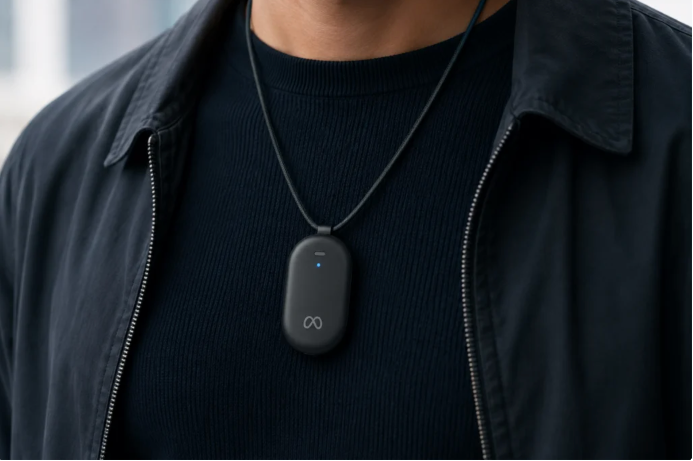
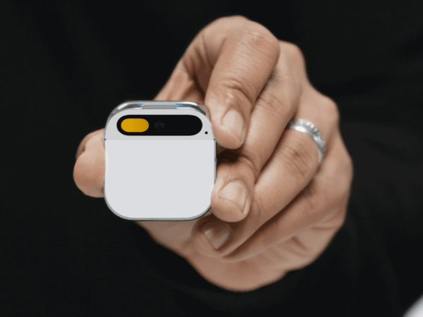
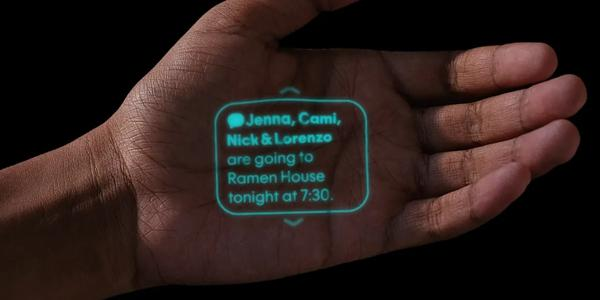
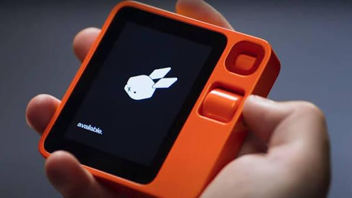
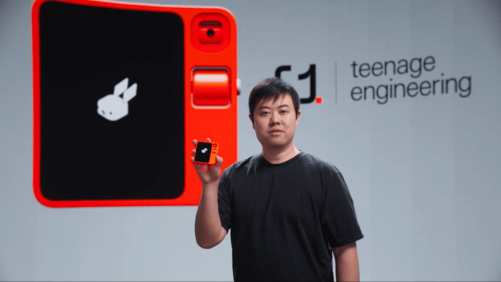
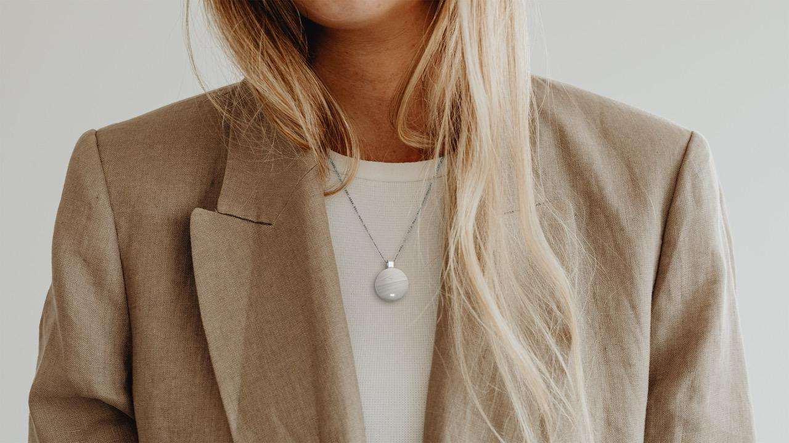
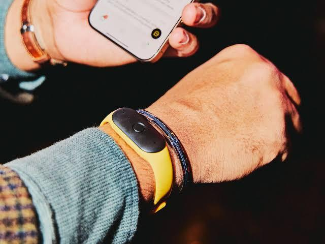
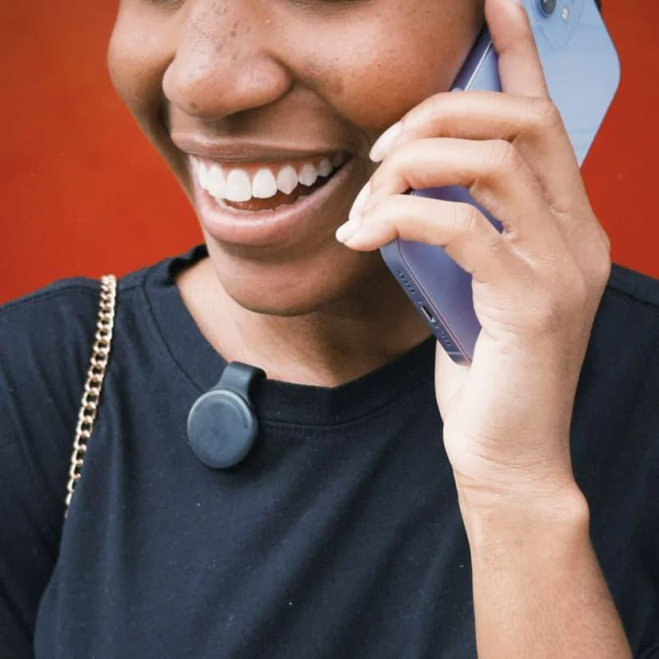
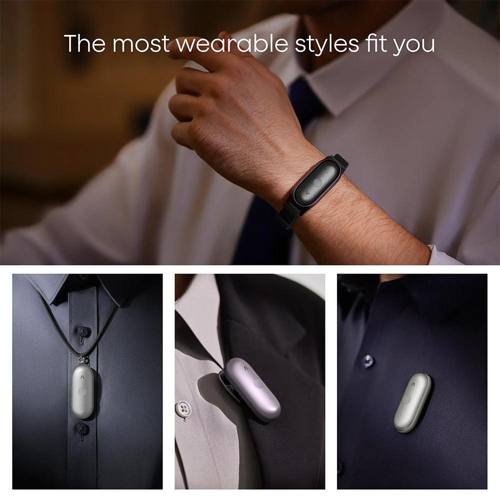

Always Listening: Outsourcing Memory항상 듣고 있습니다: 기억의 외주화
The first generation to be on camera from infancy all the way up is now grown and out in the world. Modern life gets recorded and leaves a trail, top to bottom. Photos are just background noise now, and there's no real reason to be fuzzy on where I went or what I did anymore — GPS is always tagging along, and my search history sticks around.이미 갓난애기 때부터 현재까지의 모습이 카메라에 담긴 세대가 사회인이 되어 구성원으로 살고 있다. 현대의 삶은 철저히 기록되고 자취를 남긴다. 사진은 그저 일상이 됐고, 내가 어딜 갔는지 뭘 했는지 예전처럼 기억이 가물가물할 이유도 없다. GPS 정보가 항상 붙고, 검색어 기록이 남으니까 말이다.
In the AI era we push this even further. Now there are gadgets that sit with me 24/7, listen to everything around me, write it down, and hand me a summary. The pitch: meetings, calls, lunchtime chatter — nothing slips by, it all gets remembered. The idea is basically to "outsource" my memory to a machine.AI 시대에 이제는 여기서 더 나아간다. 아예 24시간 나와 함께 내 주변 소리를 듣고, 받아 적고, 요약해 주는 기기들이 나왔다. 회의도, 통화도, 점심 수다도 다 흘려듣지 않고 기억해 준다는 약속. 내 기억력을 기계에 '외주' 주겠다는 발상이다.
Tempting, honestly. But this market already has a few glamorous graves in it. So when Meta announced it was rolling out a new pendant, I was excited — and also kind of thinking, "is this actually going to work?" Plenty of these things have already come and gone without a sound.솔깃하다. 그런데 이 시장엔 이미 화려한 무덤이 여럿 있었다. 메타가 새로운 팬던트를 들고 나오겠다고 발표했을 때, 기대하면서도 한편으론 "이게 정말 될까"라는 의문이 든 이유다. 이미 세상에 나왔다가 소리소문 없이 사라진 제품들이 한둘이 아니니까.

The biggest headstone belongs to the Humane AI Pin. A $699 device you magnet onto your shirt, plus a $24/month subscription — riding the grand dream of "AI replaces the smartphone." It went brutally. Overheating, a battery that died fast, the awkwardness of a projector beaming onto your palm. In the end its assets just got sold to HP, the servers shut down, and it turned into a brick.가장 큰 비석은 휴머인 AI 핀(Humane AI Pin)이다. 옷에 자석으로 끼우는 699달러짜리 기기에 매달 24달러 구독료까지 붙은, 'AI가 스마트폰을 대체한다'는 거대한 꿈이었다. 결과는 참혹했다. 발열, 짧은 배터리, 손바닥에 쏘는 프로젝터의 어색함. 결국 HP에 자산만 매각되며 서버가 닫히고 '벽돌'이 됐다.


The headstone next to it: the Rabbit R1. A $199 orange gadget that, for all its big promises, basically just opened web pages — which earned it the "couldn't this just be an app?" mockery. And we can't leave out Friend, the $99 AI necklace. It billed itself as a "friend" to keep loneliness at bay, but before the product even shipped it blew a fortune on ads — and what actually went viral was the graffiti people scrawled all over those ads. You can see the pattern. The ones that charged in just trying to replace the smartphone almost all died.옆 비석은 Rabbit R1. 199달러짜리 주황색 기기였는데, 거창한 약속에 비해 실제론 웹페이지나 여는 수준이라 "그냥 앱이면 되잖아"라는 조롱을 들었다. Friend라는 99달러짜리 AI 목걸이도 빼놓을 수 없다. 외로움을 달래주는 '친구'를 표방했는데, 제품이 나오기도 전 광고비만 쏟아붓다 화제가 된 건 그 광고 위에 시민들이 한 낙서였다. 패턴이 보인다. 그저 스마트폰을 대체하겠다고 덤빈 것들은 거의 다 죽었다.


The ones that didn't die, on the other hand, dialed back the ambition. Instead of "replaces your phone," they zeroed in on the narrow job of "record your meetings and conversations and remember them for you." Limitless, Plaud NotePin, Bee, Omi. No grand revolution — they just settled in as "smart voice recorders."반대로 죽지 않은 쪽은 욕심을 줄였다. '폰을 대신한다' 대신 '회의·대화를 녹음하고 기억해 준다'는 좁은 일에 집중한 것들이다. Limitless, Plaud NotePin, Bee, Omi까지. 거창한 혁명 대신 '똑똑한 녹음기'로 자리를 잡았다.


And here's where it gets genuinely interesting. The giants started buying up these little companies. Amazon acquired Bee and bolted it onto the Alexa roadmap; Meta acquired Limitless and shut down new sales of its pendant. The moment a startup's form factor gets validated, it gets sucked in as one feature of a big platform. That tells you exactly where this category is headed.그런데 여기서 진짜 흥미로운 일이 벌어졌다. 이 작은 회사들을 거인들이 사들이기 시작한 거다. 아마존이 Bee를 인수해 알렉사 로드맵에 붙였고, 메타는 Limitless를 인수하면서 팬던트의 신규 판매를 닫았다. 스타트업이 만든 폼팩터가 검증되자마자 플랫폼 대기업의 한 기능으로 빨려 들어가는 모양새다. 이게 이 카테고리의 운명을 암시한다.
So for a pendant to truly become "my thing," there's no shortage of hurdles to clear.그래서 팬던트가 진짜 '내 물건'이 되려면 넘어야 할 문턱이 한둘이 아니다.
Price — or more precisely, the subscription. The device cost is the bait. Slap a $19/month subscription on a $49 Bee and that's $278 a year. The thing that looked cheap stops being cheap. Battery is even worse. They claim 100 hours of standby, but plenty of reviews say a heavy user can barely make it through a single day. For a device you keep on all day, "charging again?" is fatal.가격, 정확히는 구독. 기기값은 미끼다. 49달러짜리 Bee에 월 19달러 구독을 붙이면 1년에 278달러가 든다. 싸 보이던 게 안 싸진다. 배터리는 더 문제다. 100시간 대기를 말하지만 실제 헤비유저는 하루도 버겁다는 리뷰가 많다. 종일 켜두는 기기에 "또 충전?"은 치명적이다.
And then the most painful question: "why bother?" My phone already has a perfectly good voice-recording app, so the pendant has to do something my phone can't. Consent and privacy are a minefield too. "Always listening" means it can capture not just my conversations but the person next to me's, without their consent.그리고 가장 아픈 질문. "굳이?" 내 폰엔 이미 훌륭한 녹음 앱이 있는데, 팬던트가 폰으로 못 하는 걸 해야 하거든. 동의와 프라이버시 문제도 지뢰밭이다. '항상 듣는다'는 건 내 대화만이 아니라 옆 사람 대화까지 동의 없이 담길 수 있다는 뜻이니까.

Finally, fashion. People don't just strap any old thing onto their bodies. That's exactly why a wearable can't stop at being wearable — it has to get to fashionable. But an AI pendant is usually not "a design you'd want to pick," it's a vague, unidentifiable gadget carrying the slightly creepy feature of "always listening." If it gets rejected on looks before anyone even buys the function, there's no game to play.마지막으로, 패션이다. 사람들은 아무거나 몸에 달고 다니지 않는다. 웨어러블이 웨어러블함으로 그치지 않고 패셔너블로 가야하는 이유다. 그런데 AI 팬던트는 대개 '고르고 싶은 디자인'이 아니라, '항상 듣는다'는 살짝 섬뜩한 기능을 단 정체불명의 기기다. 기능을 사기 전에 외양부터 거부당하면 게임이 안 된다.

In Korea, or Asia generally, you can't easily get your hands on this kind of product through official channels. And the legal and cultural mood around recording is a different beast from the US. Not many people would be comfortable wearing a recorder on their chest at a Korean company dinner.한국이나 아시아에서는 이런 류의 제품을 정식으로 만나기가 쉽지 않다. 게다가 녹음을 둘러싼 법적·문화적 분위기도 미국과는 결이 다르다. 한국 회식 자리에서 가슴에 녹음기를 달고 다니는 걸 편하게 받아들일 사람은 많지 않으니까.
My take: this form factor is less the "final form" and more a "transitional phase." The function survives, but it'll probably get absorbed into a more natural form factor — glasses, earbuds. Meta and Amazon buying up the startups, Samsung and Google cramming AI into glasses and earbuds — it all points the same direction.나는 이 폼팩터가 '최종형'이라기보단 '과도기'에 가깝다고 본다. 기능은 살아남되, 안경이나 이어버드처럼 더 자연스러운 폼팩터로 흡수될 가능성이 크다. 메타와 아마존이 스타트업을 사들인 것도, 삼성·구글이 안경과 이어버드에 AI를 욱여넣는 것도 같은 방향을 가리킨다.
AI around your neck — handing my memory to a machine and living a life where nothing slips through — is undeniably seductive. But today's pendant has only proven half of that dream. You can pin a mic to your chest, but nobody's cleanly pinned down the reason to. The day that reason gets clear, this tech will either melt into everyday fashion, or quietly hide inside the products we're already using.목에 거는 AI, 내 기억을 기계에 맡기고 아무것도 놓치지 않는 삶은 분명 매혹적이다. 다만 지금의 팬던트는 그 꿈을 절반만 증명했다. 마이크는 가슴에 달 수 있어도, 그걸 달 '이유'는 아직 아무도 깔끔하게 달아주지 못했다. 그 이유가 분명해지는 날, 이 기술은 일상의 패션으로 녹아있든, 혹은 우리가 이미 쓰고 있는 제품들 속에 조용히 숨어있을 거다.